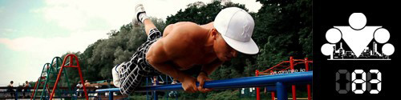
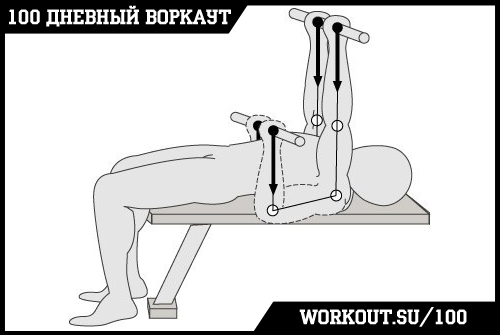
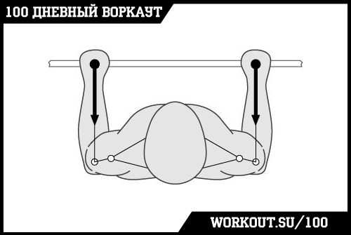
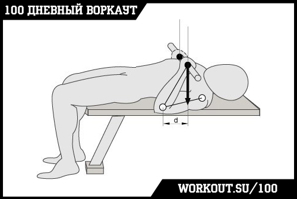
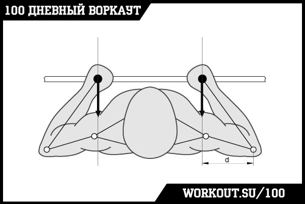

100 Дневный воркаут
<==== Вернуться к оглавлению
День 83. Направление вектора силы

Я не знаю, как у вас в школе обстояли дела с физикой, но после сегодняшнего поста, я думаю, ваше отношение к ней кардинально изменится. Потому что если заглянуть внутрь всех упражнений, то можно обнаружить любопытную вещь - они все строятся на принципах ньютоновской механики! И именно механика определяет то, насколько эффективным будет одно или другое упражнение для конкретной группы мышц. А вовсе не очередной пост в паблике или статья на интернет сайте или в журнале от каких-то там экспертов.
В инфо-посте будет использована информация из статьи Дмитрия Калашникова "Легенды и мифы Бодибилдинга", потому что пока что мы не успели подготовить собственный иллюстрирующий материал.
Для начала нам нужно разобраться с самим понятием «мышца получает нагрузку». Это значит, что в ней произошли какие-либо гомеостатические изменения в то время, когда она совершала механическую работу (например, в силу того, что очень активно происходило энергообеспечение, скопился свободный креатин, АДФ, молочная кислота, лактат и ионы водорода). Это привело к ее утомлению и, в конечном итоге, вынудило к адаптационным изменениям. Таким образом, нас интересуют вопрос, совершила ли мышца работу или нет. Здесь недостаточно опираться на свои ощущения (типа, «я чувствую, что мышца напрягается, значит, она работает». Напрягаться-то мышца может и напрягается, но не потому, что вынуждена преодолевать нагрузку, а по каким-то иным причинам. Об этом явлении чуть позже).
В этом случае встает вопрос о том, как узнать, выполняет ли мышца работу, преодолевая нагрузку или нет? На самом деле все очень просто.Мы знаем, что работа мышцы заключается в противодействии внешней нагрузке. Если мы обнаружим эту нагрузку, и она будет значительной, тогда можем сказать, что да, мышца напрягается, противодействуя ей. Если такого внешнего усилия мы не найдём, то вынуждены будем констатировать, что и мышца не нагружается – ей просто нечему противодействовать.
Учитывая, что все движения, которые могут происходить под действием любых сил в наших суставах, – вращательные, вспомним, что нагрузка, заставляющая их вращаться, называется
моментом силы
(синонимы: крутящий момент; вращательный момент; вращающий момент ) и равна произведению
самой силы
на
её плечо
. Плечо, в свою очередь, это кратчайшее расстояние от линии, вдоль которой проходит сила до оси вращения.
Давайте теперь посмотрим на схему выполнения упражнения «Жим лежа узким хватом», при котором спортсмен использует хват на ширине плеч, опускает гриф под грудь и прижимает локти к бокам. Сзади и сбоку мы увидим такую картину.


Видно, что сила, с которой штанга воздействует на руку, проходит через локтевой сустав и, значит, плечо этой силы равно нулю. Соответственно, и ее вращательный момент тоже равен нулю. Проще говоря, эта сила в локтевом суставе предплечье не сгибает и не разгибает. Поэтому и трицепс не получает нагрузку. Трицепс – это мышца-разгибатель предплечья. А здесь нет внешнего усилия, которое предплечье бы сгибало. Локтевой сустав сгибается сам по мере того, как разгибается плечо в плечевом суставе и сам же разгибается при сгибании плеча в плечевом суставе.
Конечно, трицепс в некоторой степени напрягается, обеспечивая равновесие и правильную траекторию движения снаряда (как, собственно, и многие другие мышцы). Эту роль часто неверно называют стабилизацией. Кроме того, зачастую мышцы напрягаются непроизвольно в силу того, что организм старается подключать их в максимальном количестве, минимизируя нагрузку на каждую из них. Однако такая нагрузка несопоставима с той, которая появляется при необходимости преодолеть действительно значительное внешнее усилие.
Можем ли мы как-то изменить технику с тем, чтобы все-таки трицепс получил нагрузку? Конечно, можем. Нужно создать вращательный момент, т.е. усилие, направленное на сгибание локтя. И тогда трицепс включился бы в работу, противодействуя такому усилию. Для этого мы должны добиться ситуации, когда у силы штанги появится плечо. Например, выполняя это упражнение, опуская штангу к верхней части груди (получается гибрид с французским жимом лёжа, (рис. 4) или расставляя локти пошире (рис. 5).


Казалось бы, в самом упражнении ничего не поменялось, мы только немного изменили положение рук, но при этом мы смогли значительно увеличить нагрузку на трицепс и сделать упражнение более целевым! И таких моментов в воркауте (да и вообще в фитнесе) огромное количество! Поэтому, если вы хотите, чтобы ваши тренировки были эффективными, вам нужно всегда думать о том, что, как и почему вы делаете, стараясь выжать максимум из каждого повторения в каждом подходе!
======> День 84. Потребление vs. Созидание